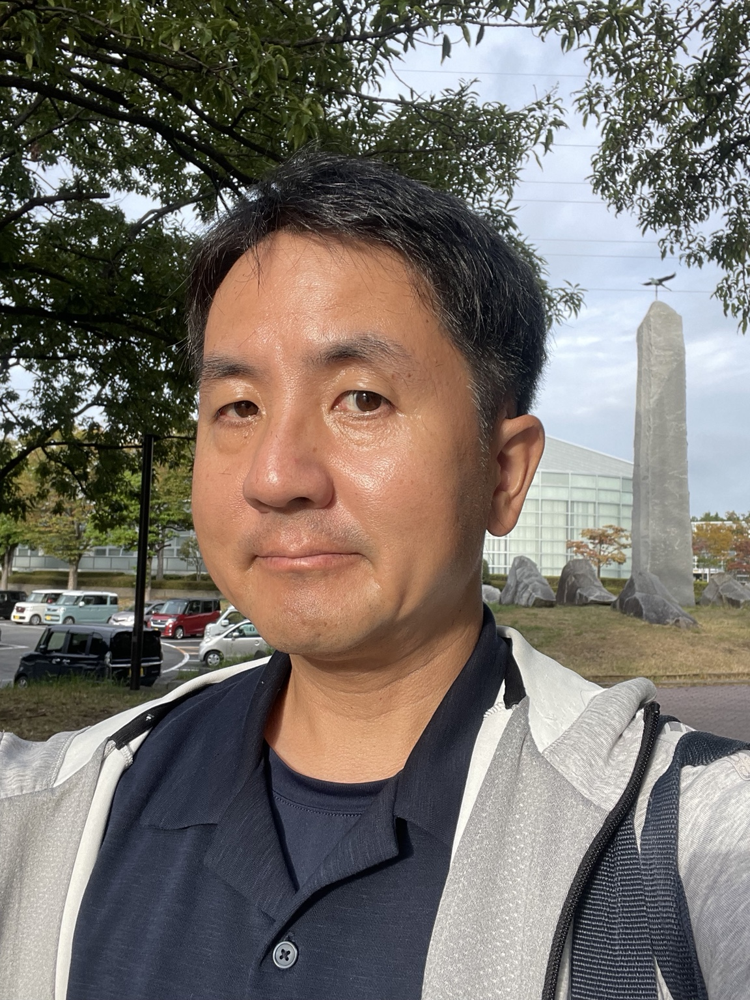

Parameter spaces
Hilbert schemes
A Hilbert scheme packages algebraic subvarieties, such as curves in projective space, into a geometric space. Its local geometry records how those curves can vary.
I study how algebraic curves move inside projective varieties, and why some apparently possible infinitesimal motions are obstructed. These phenomena are reflected in singular and non-reduced structures of Hilbert schemes.
Professor, Department of Mathematical Sciences, School of Science, Tokai University, Japan

My work lies at the intersection of deformation theory, the geometry of curves, and moduli-type parameter spaces.
A Hilbert scheme packages algebraic subvarieties, such as curves in projective space, into a geometric space. Its local geometry records how those curves can vary.
Infinitesimal deformations describe first-order motions of a curve. Obstructions detect when such motions cannot be extended to genuine families.
I investigate curves lying on cubic and del Pezzo surfaces, K3 surfaces, Fano varieties, and complete intersections of quadrics.
A central question in deformation theory is whether a first-order motion can be continued. Failure produces an obstruction and often signals singular behavior in the Hilbert scheme.
A selection tracing the development of my work on obstructions and Hilbert schemes.
Recent work develops deformation and obstruction techniques for curves lying on complete intersections of quadrics, including genus-5 K3 surfaces, and related questions about non-reduced components of Hilbert schemes.
ACADEMIC BACKGROUND
I received my Ph.D. from Kyoto University in 2005, where I studied at the Research Institute for Mathematical Sciences (RIMS) under the supervision of Prof. Shigeru Mukai . After completing my Ph.D., I spent three years at RIMS and six months at the University of Oslo as a postdoctoral researcher. During my stay in Oslo, I was supported by the Japan–Norway Researcher Mobility Programme (FY2008) , administered by the Research Council of Norway (RCN) in cooperation with the Japan Society for the Promotion of Science (JSPS), and worked in collaboration with Prof. Kristian Ranestad and Prof. Jan Oddvar Kleppe .
Department of Mathematical Sciences, School of Science, Tokai University
4-1-1 Kitakaname, Hiratsuka, Kanagawa 259-1292, Japan